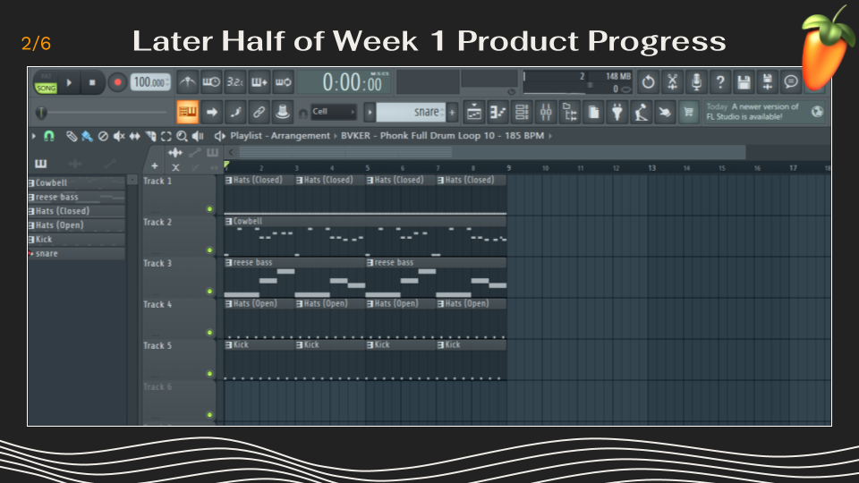

My Essential Question
How can I produce a track that captures the qualities of a strong musical work, while expressing my own style?
Artist Statement
This musical piece is a beat I produced in FL Studio with the intention to embody the qualities of an objectively good song, and in doing so, identify what actually makes a song “good”. This song is composed of synthesized drum samples, edited vocal loops, 808 bass patterns, and intricate rhythms applied to typically basic sounds, and I arranged these elements in a way that I hope is appealing to a vast majority of listeners. The genre classification of this beat lies somewhere between trap and Hip Hop, and the mood is relatively upbeat and powerful.
While listeners may not particularly enjoy music in the realm of intense trap and Hip Hop, my goal was for the beat to sound impressive and well made regardless of listener enjoyment. The nice thing about choosing music production as the topic for my senior project, is that I have a lot of prior knowledge and experience in making beats. Additionally, beats I have made in the past mostly portray similar emotions and atmospheres to the ones in this beat, which makes creating them a lot easier. Having prior experience also enables much more experimentation while creating beats, which often leads to making decisions I wouldn't normally have made, yet they make the song more interesting and pleasing. While creating this beat and others, I often utilize tracks by Sxmpra as reference and inspiration. Because I listen to his tracks frequently during everyday life, I have learned to appreciate the production and dedication that makes his songs sound as amazing as they do. With this appreciation, I realized implementing the same dedication and focus on production into my work, would lead to beats of better quality.
By deeply analyzing my creations for sonic balance and additional aspect opportunities, and comparing these to other’s creations, my music has improved significantly. I hope my improvement from earlier tracks to this one is noticeable and encourages listeners to explore my music further, and this demonstrates that music can be very beneficial to human life and productivity.
Audio Works
My Product
Snap Out of Your Daydream
Other Works
Track Title One
Track Title Two
Track Title Three
Video
[Video title or short description]
Photos
